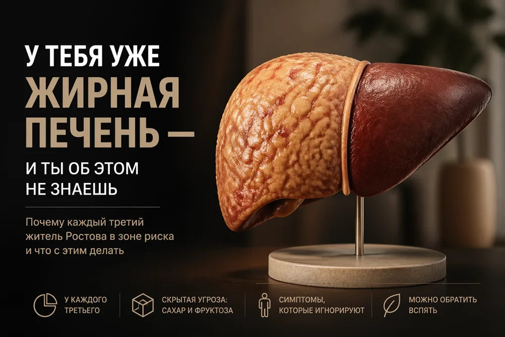

У тебя уже жирная печень — и ты об этом не знаешь



Ольга, 45 лет, пришла с усталостью и тяжестью в правом боку. УЗИ показало жировую дистрофию печени. «Я же не пью, откуда?» — удивилась она. Виноваты фруктовые соки и лишний вес.
В Ростовской области распространённость неалкогольной жировой болезни печени достигает 39,1% взрослых — выше среднероссийских 36,0%. Каждый третий живёт с этим, не подозревая.
Что такое стеатоз
Это накопление триглицеридов в гепатоцитах, когда жир занимает больше 5% массы печени. В большинстве случаев — неалкогольный стеатоз. Печень не имеет болевых рецепторов, поэтому болезнь долго немая. Без коррекции она может прогрессировать в стеатогепатит, фиброз, цирроз и рак.
Причины
- Абдоминальное ожирение: окружность талии у мужчин выше 96 см, у женщин — 84 см.
- Гиперлипидемия и метаболический синдром.
- Избыток рафинированной муки, фруктов и фруктовых соков — фруктоза напрямую идёт в липогенез.
- Генетическая предрасположенность (гены PNPLA3 и TM6SF2).
Симптомы и диагностика
Тяжесть в правом подреберье через 30–60 минут после жирной или сладкой пищи, утомляемость, тёмные участки кожи на шее и в подмышках. У 30–40% людей с доказанным стеатозом печёночные ферменты остаются в норме — это ловушка.
Минимальный набор: АЛТ, АСТ, ГГТ, щелочная фосфатаза, глюкоза, инсулин с HOMA-IR, липидный профиль, УЗИ и эластография. Дополнительно исключают вирусные гепатиты.
Что делать
Ограничить свободные сахара и фруктозу, убрать сладкие напитки и соки, заменить рафинированные крупы цельнозерновыми, добавить омега-3 и натуральный кофе. На ранней стадии всё обратимо: при устранении причины через 6–12 месяцев стеатоз может полностью уйти.
Ваш врач Гондусов Д.В. 

Статья носит информационный характер и не заменяет консультацию врача. Не занимайтесь самодиагностикой.